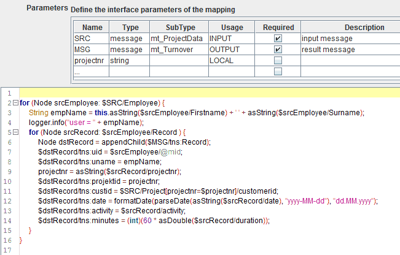

Extended Java mapping

Topic content
Concept
An Extended Java mapping is a procedural mapping. The mapping is described by a procedure (a method) written in an extended Java language. The language is extended by allowing to embed XPath expressions into the source code. Orchestra uses a preprocessor to create plain Java code from this Extended java code. That means that in the Extended Java mapping you may use any Java statement or Java expression because it actually is Java.
|
But note that currently only Java 1.4 is supported because internally a Java 1.4 compiler is used (Janino). That means that especially generics are not available! |
You also should know that the mapping script is nothing more than the body of a method. For each mapping a Java class is generated which inherits from the base class ProceduralMapping.
Creation
Extended Java mappings are created in the same way than any other Message mapping. In the scenario element tree select the group message mappings and click on the right mouse button. Then a popup menu opens where you select the item . In the wizard you will be asked to select the mapping type. Here you select the type Extended Java mapping. The wizard will create a minimal script which copies the source message and returns it as value of the result variable.
Configuration
To configure the mapping double click on the entry in the scenario element tree. Then the editor panel to configure the mapping is opened.
In the upper part the input and output parameters of the mapping are shown. The minimal parameters are a message parameter for the input message and another message parameter for the output message. By default these parameters are named SRC and MSG.
The following pictures shows the minimal mapping created from the creation wizard.
The trivial default mapping created by the mapping wizard
This mapping creates a deep copy of the source message and assigns it to the output variable MSG. Of course this not very sensible. But in some cases a message has to be changed only slightly to conform to some special requirements of a receiving system. Such a mapping might look like:
simple example showing how to change one element of the structured message
As you can see in the first line, the whole source structure is copied. Then an XPath is applied on the root node of the source message referenced by the variable SRC. The XPath selects the element PID.8 of the element PID. Because an XPath always returns a NodeSet we need to apply the method asString to get the text content of the selected Node. The element PID.8 contains a code for the sex of a Patient in a hospital. In this example we assume that in the source system female is encoded as "w" and we want to translate that to "f" in the target system. This translation is done by a simple Java expression whose value then is assigned to the field PID.8 in the target message.
Using XPath assignments
Actually the Expression $SRC is the shortest possible XPath expression. Within the language of the Extended Java mapping an XPath always has to begin with a $ sign. Actually in XPath the $ sign marks a variable name. So in the Extended Java mapping an XPath expression like concat($var, '.txt') is not possible because it is simply not recognized by the preprocessor. But this is no serious problem because within java we have much more functions (static methods) available than in XPath itself. So the Expression $SRC in the mapping script refers to the root node of the structured message references by the variable SRC. Respectively the Expression $MSG refers to the root node of the target message to be created. Actually this root node is created by the Extended Java mapping before the mapping script is executed.
Any assignment of the form $varname = <nodeexpr> performs a deep copy of the structured node on the right to the structured node on the left.
That means:
•the Variable varname must be defined in the top part of the mapping editor labeled . Otherwise the XPath engine is not able to resolve the variable name.
•the Variable varname must have the type message or Node. Node actually is the java interface org.w3c.dom.Node
•the Variable varname must already have a value. If you want to assign a Node to a variable simply make a Java assignment like Node node = <nodeexpr>;
•the right side of the assignment must be an expession of type message, Node or NodeSet.
•If the right side returns a message then the root node is selected, if it returns a NodeSet, then the first Node of that Node set is selected when evaluating the expression. If the Node set is empty an exception is thrown.
•Then a deep copy of the node computed from the evaluation of the right side expression is created and assigned to the node on the left. If the variable on the left references a Node which is part of a DOM tree the copy of the node is imported in that DOM tree.
Example: The assignment
$dstRecord/tns:customer = $SRC/Projekt[projektnr=$projectnr]/Kunde;
will be translated to by the preprocessor to the java code
private XPath _XPATH10;
private XPath _XPATH11;
this._XPATH10 = new BaseXPath("tns:customer");
this._XPATH11 = new BaseXPath("Projekt[projektnr=$projectnr]/Kunde");
assign(selectL(dstRecord,_XPATH10), selectR(SRC,_XPATH11));
The methoed selectR will then apply the XPath on the source tree, selectL will select the target XPath on the target tree and create some missing nodes. Finally the method assign will then copy the content of the source node to the target node.
Any assignment of the form $varname = <simpleexpr> also performs a copy of the value on the right to the structured node on the left.
That means
•the Variable varname must be defined in the top part of the mapping editor labeleled .
•the Variable varname must have the type message or Node.
•the expression on the right must be of type string, double or date.
•the right side expression is converted to a string and then set as text value of the node on the left.
You can use XPath expressions to reference elements in the source message as well as to reference elements of the target structure if you want to assign values to it. Nodes missing in the target will be created automatically.
E.g. if you write the statement
$MSG/first/second/third = "hello";
then the missing nodes first, second and third will be created. The node third then receives the text value hello.
Using message namespaces
Element names within XML documents may be qualified by a namespace. Within an XPath expression you always have to use a prefix to denote a namespace. The meaning of these prefixes have to be defined in the top area of the mapping editor named . Here you have to set the prefix / namespace pairs you want to use in your mapping. They are then automatically written as namespace declarations into the root element of the generated DOM tree.
Using loops to traverse the source message and build the target message
A more elaborate example is shown in the following picture:

This example shows in the area an additional variable projectnr. Because an Extended Java mapping is basically Java code you also might define a local variable in the editor area like the variable empName in our example. But then the variable is not visible to the XPath engine. Because the variable projectnr is used in the XPath expression $SRC/Project[projectnr=$projectnr]/customerid, it must be defined in the area.
The example shows how to build up a structured message using two nested loops. This resembles the structure of the source message type having two levels.
The outer loop runs through the set of all Employee nodes using a for loop. Then the name of the Employee is build using two simple XPaths.
The inner loop then runs through every Record under the current Employee node.
Using the option Typed target
In an Extended Java mapping you define a procedure creating the target message structure. This procedure creates the message independently of the structure which is defined in the message type. To be sure that the created message actually resembles the structure of the message type selected as target message type you may select the check box typed target.
Accessing messages not declared as message variables
If you acquire a message within the mapping script, e.g. by calling a channel you have to register the message to the XPath engine before you can access the message content through XPath.
The input message is automatically registered.
E.g. if you created a proxy called lookup_Doctor(String eanNr) you might call this proxy in the mapping:
DOCTOR_MSG = my.com.AdptProxy.lookup_Doctor(EAN_NR);
Before you can call an XPath on that message you must write:
registerMessage("DOCTOR_MSG", DOCTOR_MSG );
Now you can apply the XPath, e.g.:
$DOCTOR_MSG/tns:PV1/tns:PV1.7/tns:XCN.1 = $ARZTMSG/Triamed_Arzt/SAP_ArztNr;
Available functions
In the Extended Java mapping you can use a set of predefined mapping functions. These functions are implemented as static methods of the class InternalMappingFunctions. For each mapping a Java class is generated which inherits from the base class ProceduralMapping which in turn inherits from InternalMappingFunctions.
The following additional methods are defined in ProceduralMapping which may be useful in an Extended Java mapping.
Getting the value of a DOM node
•String asString(NodeSet nodeset) convert a node set according to the XPath rules into a string. If the node set contains only one node the text content of the node is returned.
•Double asDouble(NodeSet nodeset) convert a node set according to the XPath rules into a numeric value, specifically into a floating point number of type double.
•Long asLong(NodeSet nodeset) convert a node set according to the XPath rules into a integral value of type Long. If the node set is empty return null. Throws an Exception if the string value doesn't represent a valid integral number.
•int asInt(NodeSet nodeset) convert a node set according to the XPath rules into a integral value of type int. Throws an Exception if the node set is empty or if the string value doesn't represent a valid integral number.
•Node asNode(Object value) value muss ein Node, ein NodeSet oder eine Message sein. Die Funtion liefert den ersten Knoten der Knotenmenge bzw. den Wurzelknoten der Message.
•NodeSet selectR (Message msg, XPath path)
•NodeSet selectR (Node node, XPath path)wendet den XPath auf den Knoten node bzw. den Wurzelknoten der msg an und liefern die resultierende Knotenmenge. Diese Statements werden in der Regel aus eingebetteten XPath-Ausdrücken generiert. Die verwendeten Präfixe für Namespaces müssen im Mapping-Editor deklariert worden sein.
•NodeSet selectChildrenR (Message msg, String namespace, String tagName)
•NodeSet selectChildrenR (Node elemParent, String namespace, String tagName) liefert die Menge aller Kinder des Wurzelknotens mit dem gegebenen Namen. Wenn das namespace-Argument null ist, dann wird versucht, den Namespace anhand des Präfixes im tagName-Argument aus den Namespace-Deklarationen zu ermitteln, die im Mapping-Editor deklariert wurden.
Adding and removing Nodes in the DOM tree
The following functions serve to remove and add nodes to the target DOM tree. They are not allowed on the source message of the mapping because in Orchestra a message must never be changed.
•void remove(NodeSet nodes) remove all nodes of the node set from a DOM tree.
Typically this is used together with an XPath e.g. remove($MSG/tns:Record[tns:ident=$RID]/tns:name) to remove the name field of a specific Record node.
•void remove(Node nodes) remove a node from a DOM tree. Only allowed on the target message.
•Element insertBefore(Node following, String namespace, String tagName) insert an new element in the DOM tree before a given node.
This may be helpful if you want to extend an existing message and need to add an element at a particular position. Typically this is used after an XPath assignment $MSG = $SRC.
When you use the Typed target mode this is hardly ever necessary because the Typed target mode inserts nodes at the correct position according to the message type.
•Element appendChild (Message message, String namespace, String tagName) add a new node to the end of the message, that means as last child of the root node; returns the new node (an Object of type org.w3c.dom.Node)
•Element appendChild (NodeSet nodes, String namespace, String tagName) add a new node as last child node to the first node in the node set; returns the new node. The node set must contain exactly one node. If not an Exception is thrown. Typically this method is called implicitly by the preprocessor. E.g. you can apply the XPath $NODE/Record/Person using the code appendChild($NODE/Record/Person). The preprocessor then will create the source code appendChild(selectL(NODE, new BaseXPath("Record")), null, "Person").
•Element appendChild(Node parent, String namespace, String tagName) add a new node as last child node to the given parent node and return the new node.
•Element appendChild(NodeSet nodes, String namespace, String tagName, String value) add a new node with the given text value as last child node to the node in the node set and return it. The node set must contain exactly one node. If not an Exception is thrown.
•Element appendChild (Node parent, String namespace, String tagName, String value) add a new node with the given text value as last child node to the given parent node and return the new node.
•Element addChildElement(NodeSet nodes, String namespace, String tagName) The node set must contain exactly one node. Typically this method is called using an XPath e.g. addChildElement($NODE/Record, "", "Person"). In typed target mode a new element is added to the first node of the node set at the appropriate position. If typed target is not set is simply calls appendChild.
•Element addChildElement(Node parent, String namespace, String tagName) In typed target mode a new element is added to the node at the appropriate position (according to the message type). If typed target is not set is simply calls appendChild.
•Element createElement (Document doc, String namespace, String tagName) Rarely used because normally you use XPath or the methods appendChild or addChildElement to add a new Element. Actually createElement is called implicitly by these methods.
•NodeSet selectL (Message msg, XPath path)
•NodeSet selectL (Node node, XPath path)wendet den XPath auf den Knoten node bzw. den Wurzelknoten der msg an und liefert die resultierende Knotenmenge. Existiert ein Knotenname, der im XPath referenziert wird, im Dokument nicht, dann wird er automatisch erzeugt! Diese Statements werden in der Regel aus eingebetteten XPath-Zuweisungen generiert. Die verwendeten Präfixe für Namespaces müssen im Mapping-Editor deklariert worden sein.
•NodeSet selectChildrenL (Message msg, String namespace, String tagName)
•NodeSet selectChildrenL (Node elemParent, String namespace, String tagName) liefert die Menge aller Kinder des Wurzelknotens mit dem gegebenen Namen. Wenn das namespace-Argument null ist, dann wird versucht, den Namespace anhand des Präfixes im tagName-Argument aus den Namespace-Deklarationen zu ermitteln, die im Mapping-Editor deklariert wurden. Existiert kein Kind mit dem gegebenen Namen, dann wird ein Kinknoten mit dem Namen angelegt.
•void assign (NodeSet target, NodeSet source) jeder Knoten aus der Knotenmenge erhält einen neuen Inhalt der aus dem ersten Knoten des source-Arguments kopiert wird. Ist source leer, wird nichts gemacht, hat source mehr als einen Knoten, dann wird eine Exception geworfen. Aufrufe dieser Methode werden generiert, wenn im Quellcode Zuweisungen der Form $DST = $SRC stehen.
•void assign (NodeSet target, Node sourceNode) jeder Knoten aus der Knotenmenge erhält einen neuen Inhalt der aus dem sourceNode kopiert wird.
•void assign (NodeSet target, Number value)
•void assign (NodeSet target, XMLGregorianCalendar value)
•void assign (NodeSet target, int value)
•void assign (NodeSet target, String value) jeder Knoten aus der Knotenmenge erhält das value-Argument als neuen Text-Inhalt.
•void copyContent (Node target, Node source, boolean inheritNs) kopiert den kompletten Inhalt des source-Knotens in den target-Knoten. In der Regel sollte man die Zuweisung $target = $source vorziehen. Die Methode kann sinnvoll sein, wenn während des Kopierens der Namspace angepasst werden soll. Dann setzt man den Parameter inheritsNs auf true. Dann wird die Struktur der Quelle kopiert, aber jeder Kindknoten erhält den Namespace des target-Knotens.
Other functions
•Document getDocument(Message msg) get the DOM tree stored in the message. It is represented by an object of class org.w3c.dom.Document. Necessary if you want to access the DOM tree using plain java.
•boolean exists(NodeSet nodeset) Check if a node exists, that means if a node set is empty.
This method is typically used together with an XPath, e.g. if (exists($node/ns0:ident)) { String ident = asString($node/ns0:ident); }
•int count(NodeSet nodeset) return the number of elements in a node set.
This method is typically used together with an XPath, e.g. int recordCount = count($node/Record);
•void registerMessage(String varname, Message msg) If you want to access a message using XPath you must register the message at the XPath engine using this function. For all the messages being parameters of the mapping this is done automatically as well as for the target message. But if you acquire a message through any other means, e.g. by calling a channel, you must call this method.
•String stringJoin(NodeSet nodes, String delimiter) join the text values of the nodes contained in the node set. The values are delimited by the given delimiter in the result.